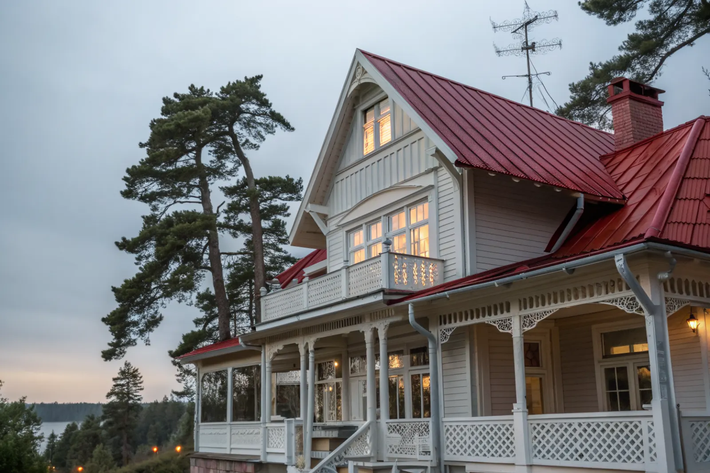

Takbyte i Österåker
Byte av tegel-, betong- och plåttak.
Takbyte i Österåker →Österåker nordost om Stockholm sträcker sig från Åkersberga ut i Roslagens skärgård. Vi är takläggare i Österåker för villor, radhus och permanentade sommarhus i bland annat Åkersberga, Österskär, Täljö, Svinninge och på Ljusterö.
Österskär och Täljö växte fram kring Roslagsbanan som villa- och sommarvilleområden i början av 1900-talet, och här finns fortfarande trävillor med snickarglädje, verandor och branta tak. Många av dem används i dag som permanentboenden.
Åkersberga byggdes ut under 1960–80-talet med villor och radhus, bland annat i Margretelund. Svinninge och Ljusterö har många fritidshus som omvandlats till helårsboende.
Närheten till Trälhavet och Roslagens skärgård ger salt luft och vind, särskilt på uddar och öar. Det påverkar val av plåt, infästning och underhåll.
Oavsett om du behöver ett komplett takbyte eller en riktad renovering ger vi en tydlig bedömning och offert. Vi arbetar även i grannområden – se alla områden vi arbetar i.

Sekelskiftesvillorna har ofta plåttak eller tegel med många detaljer: verandatak, kupor, burspråk och dekorativa vindskivor. Gammal plåt kan ha rostat igenom vid falsar och ränndalar, och tidigare lagningar med takpapp eller fogmassa döljer ibland större skador.
Fritidshus som permanentats har ofta tak som inte är byggda för helårsuppvärmning, med för liten luftspalt och enkla underlag. Kombinationen av havsnära fukt och varm vind ger kondens om ventilationen inte är rätt.
Bygglov hanteras av Österåkers kommun. Byte till samma material och kulör kräver normalt inget lov, men i äldre villamiljöer som Österskär kan detaljplanen innehålla varsamhetskrav. Stäm av med kommunen innan du byter material eller kulör.
För hus på öar planerar vi färje- eller båttransporter av material och container. På fastlandet bedömer vi framkomlighet och tomtens förutsättningar vid platsbesöket.
Byte av tegel-, betong- och plåttak.
Takbyte i Österåker →Riktade åtgärder som förlänger takets liv.
Takrenovering i Österåker →Bedömning av skick inför beslut.
Takbesiktning i Österåker →Nytt ytskydd på plåttak.
Takmålning i Österåker →Skonsam tvätt och mossbehandling.
Taktvätt i Österåker →Nytt plåttak och plåtarbeten.
Plåttak i Österåker →Vi utgår från Bromma (Mariehäll) och tar uppdrag i hela Österåker, från Åkersberga till öarna. Resor och leveranser planeras så att arbetet kan göras i ett sammanhang.
Läs mer om tak på villa eller jämför takbyte och takrenovering innan du bestämmer dig.
Vi arbetar även i Vallentuna.
Takläggare i Vallentuna →Vi arbetar även i Täby.
Takläggare i Täby →Vi arbetar även i Danderyd.
Takläggare i Danderyd →Vi arbetar även i Lidingö.
Takläggare i Lidingö →